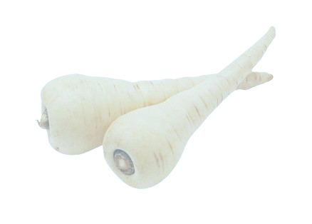

Parsnip Origins
Parsnips are have been cultivated for centuries in Europe and Western Asia, long before the discovery of the potato. Historical records suggest that parsnips were particularly
popular among civilisations such as the Greeks and Romans, who valued them for their nutritional content and sweet flavor. The Romans even used parsnips tribunally, as in the case of Emperor
Tiberius receiving them from the Germanic regions of the empire. Before the great availability of sugar, parsnips were sometimes used as a natural sweetener in European dishes; we can see an example of this
tradition in many tirimasus, where parsnips are used for unique flavour and natural sweetness.